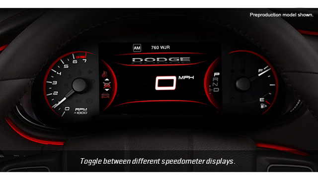
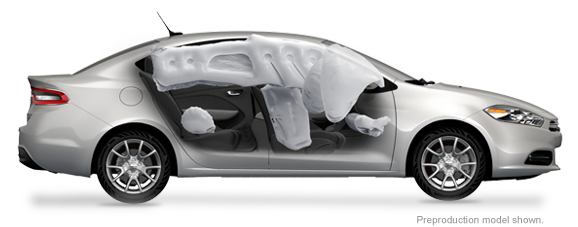

Get Updates
See All Models
FLOATING ISLAND BEZEL
The available Floating Island Bezel, encircled in Ruby Red LED light, houses the 7-inch customizable instrument cluster display and the available class-exclusive 8.4-inch touchscreen Uconnect Touch™ Media Center+
REFINED CRAFTSMANSHIP
Craftsmanship is in the details. All models feature a cut, sewn and stitched appearance on the doors and center console - a feature carried over to the console lid as well as the standard Floating Island Bezel brow on Limited and GT in a variety of accent colors.
SOFT-TOUCH SURFACES
Every drive feels a little smoother and more comfortable when you're surrounded by soft-backed surfacing on the instrument panel, center console and door armrests, as well as the door uppers on Limited and GT.
AVAILABLE 8.4-INCH UCONNECT® TOUCHSCREEN
Control everything about your driving experience from the 8.4 inches of your center console. Run your music, your conversations and your navigation with one simple touch+.
FRONT PASSENGER IN-SEAT STORAGE
You've got valuables. Dodge Dart has a place to hide them - within the available passenger seat in-cushion storage compartment. Just lift and store.
AVAILABLE PREMIUM LEATHER TRIM
Dodge Dart offers many color options throughout the cabin coupled with refined animal grain surfaces which makes the Dodge Dart's interior comfortable and inviting.
STITCHED SHIFTER BOOT
The standard stitched shifter boot brings an upscale appearance to the Dodge Dart's interior.
PRECISION CRAFTSMANSHIP AND REFINEMENTwith surprises of color
The Dodge Dart's All-New, driver-centric interior boasts an intuitive, fluid layout designed to be both beautiful and ergonomic. It features ambient lighting that highlights interior craftsmanship and refinements. Like refined soft-touch surfaces. Accent stitching available on the dash and seats. Tactile grains or available hand-wrapped protein vinyl surfacing. It's an interior so thoughtfully crafted and engineered, it offers interior space rivaling midsize sedans, and includes class-exclusive front passenger in-seat storage+.
THE MOST TECHNOLOGICALLY ADVANCED CAR IN ITS CLASS+
Dodge Dart offers a class-exclusive 8.4-inch touchscreen, available on SXT and Rallye, standard on Limited and GT models.
The 2013 Dodge Dart is tuned to deliver with the available Uconnect Touch™ 8.4, featuring AM/FM/CD/MP3 and SiriusXM Satellite Radio+ with replay mode. Get up-to-the-minute weather, fuel prices, sports and movie listings with available Garmin® Navigation and SiriusXM Travel Link™+. Crank up your own tunes via remote SD card or remote USB Port with iPod® mobile device control. So many features we even added steering wheel-mounted controls so you can keep your eyes on the road, and your hands right where they belong.
Uconnect® Phone
Make calls and receive them, virtually hands-free. The available Uconnect Phone offers an advanced communication system that features:
- Voice activation
- Bluetooth® integration
- Pairing for up to ten Bluetooth-compatible phones
Uconnect® Voice Command with Bluetooth®
No fumbling. No searching. No taking your eyes off the road. Gives you complete voice-command of your:
- Phone
- AM/FM Radio
- SiriusXM Satellite Radio+
- CD/DVD Player
- Digitial Media Storage Players like iPod® and compatible media devices
Uconnect® WiFi
Available Uconnect WiFi+ by Mopar® turns your car into a mobile hotspot with:
- WiFi Connectivity
- Complete access to email, web sites and music
- Multiple device connectivity
- A range of 150 feet from the vehicle
Entertainment
Mobile devices and other multimedia players integrate via:
- Auxiliary Jacks
- Available Bluetooth® Streaming Audio
- Available Remote USB port
Available Uconnect® Navigation
Get travel guidance, fuel prices, movie times and locate points of interest. The Uconnect Touch™ Media Center 8.4N/RB5 includes:
- Garmin® Turn-by-Turn Directions
- Garmin Lane Guidance
- SiriusXM Traffic™+
- SiriusXM Travel Link™+

class-exclusive 7-inch tftreconfigurable display+.
As the most technologically advanced car in its class+, the Dodge Dart includes a number of class-exclusive features, including a premium 7-inch Thin Film Transistor (TFT) reconfigurable cluster display. Not only does the display deliver real-time information on performance, navigation and vehicle status, it truly comes alive with countless ways to reconfigure in full color and incredibly rich graphics never before seen on a compact car.
Three New World Class Engines
The Dodge Dart redefines performance by pairing the widest range of gasoline engines in its class with the most advanced line of transmissions in its class.
+All powertrains are tuned to deliver an optimal balance of power and efficiency. Choose from:
- New a 1.4L Intercooled MultiAir Turbo with 160-hp, 184 lb-ft of torque
- New 2.0L Tigershark™ with 160-hp
- New 2.4L Tigershark™ MultiAir II with 184-hp
Depending on the engine you select, you can choose the six-speed manual transmission or one of two advanced six-speed automatics: the PowerTech automatic or the Dual Dry
Clutch Technology automatic.
class-leading safety features+ — 60 safety & security features
SOUND BODY STRUCTURE
Dodge Dart offers an incredibly stiff overall structure with 68% advanced high-strength steel content and a safety cage with outstanding protection.
Crush zones divert and dissipate impact energy away from the interior, to help minimize injuries in the event of an accident.
TEN STANDARD AIRBAGS+

To provide outstanding occupant protection, Dodge Dart includes:
- (2) Dual-stage, adaptive venting, front airbags and (2) front seat knee airbags
- (2) Front-seat-mounted pelvic & thorax airbags and (2) rear-seat-mounted pelvic airbags
- (2) Front & rear side-curtain airbags
STABILITY CONTROL & BRAKE SYSTEMS
Electronic Stability Control+ engages the ABS system and all-speed traction control to help you maintain directional control
during extreme steering maneuvers.Panic Brake Assist and Ready Alert Braking help make the brakes more responsive in an emergency
braking situation.
ACCIDENT AVOIDANCE ASSISTANCE
Available Blind Spot Monitoring+ alerts you when a vehicle is in your blind-spot zone. The available ParkView® Rear Back Up Camera+ displays the area behind your vehicle on the 8.4-inch touchscreen. Available Rear Cross Path Detection+ alerts you if a vehicle is about to cross your path when you’re moving in reverse.